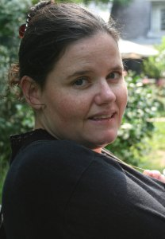

[Donette's Home] [Art][Elijah James Bell]
(Last updated 2007-12-06)

As Elijah is growing, I seem to be as well. Not only with Age, but in trying to find a deeper relationship with God. The journey so far has led me to a greater acceptance of myself and who I am in Christ and What kind of person I want to be. I have also been able to accept the road I have travelled to get where I am today. It is a challenge everyday to be a Good Mom to a very busy toddler, but I wouldn't miss a minute.
I am very much interested in Education of my own children. I don't trust in the school system at all, and I believe my children will learn so much more from me, from God and I trust that God will make sure we have the correct tools available. I am also looking forward to learning again myself...learning through my children.
I can be contacted at donettebell@frog.za.net